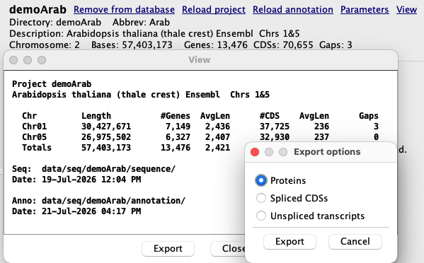
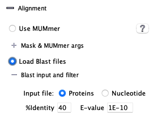
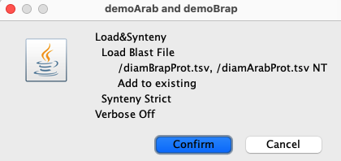
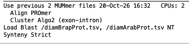
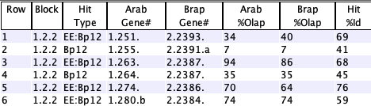

Load Blast
| Create the FASTA files | Run Blast or Diamond | Load Blast files | Add to existing hits | Example and details |
This page describes using Blast or Diamond for computing the hits for SyMAP.
Pros: (1) Loading a blast file is much faster than SyMAP running MUMmer. (2) Any numbers of blast file hits can be 'added' to the existing hits.
Cons: (1) It does not work if one of the genomic sequence is not annotated and it does not perform gene discovery. (2) It loses the exon/intron alignment coordinates, hence, the alignment to the 2D exon/intron structure is incorrect. (3) The user must obtain and manually run Blast or Diamond.
The steps are very easy:
- Use the SyMAP Export to create a FASTA file of the protein, CDS or Exons.
- Run Blast or Diamond on them and put the results in data/seq_results/<project1>_to_<project2>/blast.
- Set Load Blast files from Parameters, then run Selected Pairs or Selected Redo (add to existing hits).
Create the FASTA files
When you load the project, you may request that either the Exons or CDSs be loaded; see Parameters.
|  |


The export can take awhile, e.g. for the demoArab 13,476 genes:
- It took 13 minutes on my old MacOS x86_64
- It took 3 minutes on my newer MacOS M4
- It uses a single CPU and does not use much memory.
By default, the exported files will be in the SyMAP /export directory.
The FASTA header line uses the ID= value from the GFF file attribute; see
Annotation file.
Run Blast or Diamond
SyMAP does not run Blast or Diamond for you. You must download Blast or Diamond.For protein sequences, use Blastp or Diamond.
For nucleotide sequences, use Blastn.
The output file must be the tabular format (-outfmt 6).
It is recommended that the results only show the top 5 hits per gene (-max_target_seqs 5).
For the Demo, you can copy and paste the commands from Example below.
Load Blast files
| Start SyMAP and select
Pair Parameters.
Select the Load Blast files option. If protein files are being compared, select Proteins, else select Nucleotides. For protein files, the length of the hits is multiplied by 3 to better approximate its alignment. When you select Save, the directory data/<project1>_to_<project2>/blast will be created. |  |
| Exit SyMAP and move the blast tab file(s) to data/<project1>_to_<project2>/blast. | |
|
Restart SyMAP and select Selected Pair; a popup (as shown on right) will confirm your
parameters; select Confirm.
SyMAP will load the blast hits, then execute the Collinear algorithm and Synteny algorithm. |  |


- The hits coordinates are set to start at the beginning of the first CDS or exon. That is, the hit does not align correctly with the gene (MUMmer hits do align correctly).
- Only one hit per gene pair from a file will be loaded unless there are hits that do not overlap.
The blast hits are not clustered like the MUMmer hits are. - If a hit between a gene pair already exists in the database, only the Hit Type column will be updated to indicate that the hit was found in multiple files (see Query table).
Add to existing hits
- In order to load both MUMmer and Blast hits, first run SyMAP with MUMmer. Then add the Blast hits.
- The Load&Synteny can be executed with any number of blast files.
If multiple files are being loaded, make sure they are all from protein sequences or all from nucleotide sequences, and have the parameter correctly set to Protein or Nucleotide, respectively.
SyMAP does NOT check if a file is already loaded. - MUMmer, Blast and Diamond produce different subsets of gene pair hits. Moreover, Blast and Diamond produce different subsets depending one whether project1 is the blast database or project2. By loading all variations, the maximum number of gene pair hits will be in the SyMAP database.
Remove hits added by a given file: There is no way to do this. Clear Pair then reload the desired files.
Example and Details
| Load MUMmer + Blast Hits | Query Table | Go to top |
By default, the exported files are written to /export.
I generally create a directory
data/seq_results/<project1>_to_<project2>/export
and move the FASTA files here, and run Blast/Diamond from this directory.
Then I copy the desired *.tsv files to ../blast.
Note: Clear Pair only removes the /align and /blast directories.
The following filenames are suggested naming; SyMAP does not care as long as they are outfmt 6.
Diamond:
diamond makedb --in demoBrapProt.faa -d brapdb diamond blastp -q demoArabProt.faa -d brapdb -o diamBrapProt.tsv -f 6 -k 5 -p 4
Blastp:
makeblastdb -in demoBrapProt.faa -dbtype prot -out brapAAdb blastp -query demoArabProt.faa -db brapAAdb -out bltBrapProt.tsv -outfmt 6 -max_target_seqs 5 -num_threads 4
Blastn
makeblastdb -in demoBrapExon.fna -dbtype nucl -out brapNTdb blastn -query demoArabExon.fna -db brapNTdb -out bltBrapExon.tsv -outfmt 6 -max_target_seqs 5 -num_threads 4or
makeblastdb -in demoBrapCDS.fna -dbtype nucl -out brapNTdb blastn -query demoArabCDS.fna -db brapNTdb -out bltBrapCDS.tsv -outfmt 6 -max_target_seqs 5 -num_threads 4
MUMmer + Blast hits
Mask vs Blast shows timing comparison results between using mask MUMmer and Blast.The following shows adding multiple files of blast hits.
- MUMmer hits were loaded and clustered.
>> Summary for demoArab to demoBrap 8,507 hits 44 synteny blocks 8,143 gene hits 5,789 synteny hits - Two files of diamond protein results were added, one with demoArab as the blast database, the other with
demoBrap as the blast database.
Load Blast for demoArab and demoBrap 7,701 gene pair hits in database --- Read File /diamBrapProt.tsv --- Projects Gene IDs in correct order 29,448 Hits from Blast file 8,202 Failed %identity cutoff of 40 626 Failed E-value cutoff of 1.0E-10 7,481 Update existing hits - file #1 13,139 Saved new hits --- Read File /diamArabProt.tsv --- Projects Gene IDs in reverse order - swapping 22,864 Hits from Blast file 4,725 Failed %identity cutoff of 40 390 Failed E-value cutoff of 1.0E-10 15,687 Update existing hits - file #2 2,062 Saved new hits 22,902 Total hits in database Finish Load Blast 12s >> Summary for demoArab to demoBrap 23,708 hits 76 synteny blocks 23,344 gene hits 8,023 synteny hits Complete processing 51s
The bottom of the Summary shows:


Query table
|
 |
|

| Go to top |
Email Comments To: cas1@arizona.edu